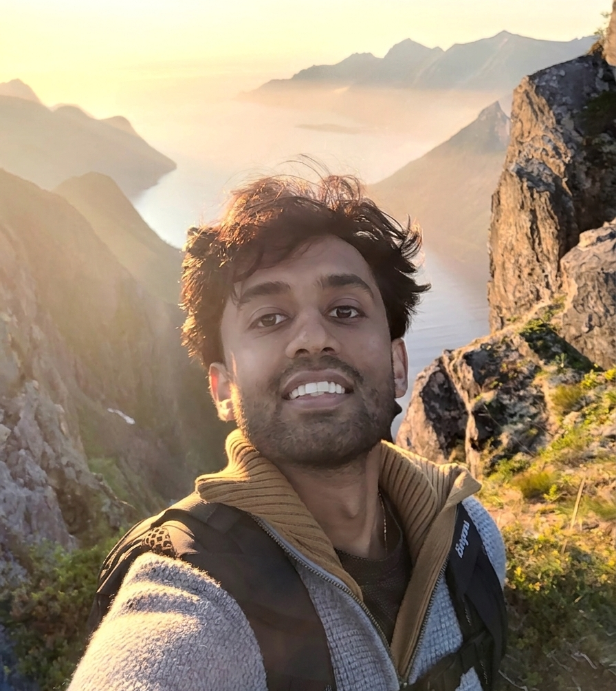

Hi! My name is Pranav and I am a second year Ph.D. student studying Applied Mathematics at the University of Michigan! I am generally interested in solving problems in fluid and solid mechanics using numerical methods. Recently, my research has consisted of building models to simulate the mechanics of slender oscillating bodies passing through water (such as swimming fish). In the past, I have used computational modelling to solve problems in systems biology and polymer science.
In addition to research, I am devoted to helping others engage with and appreciate mathematics. At U-M, I have acted as the Instructor of Record for one section of Math 115 (Calculus 1) and three sections of Math 116 (Calclulus 2). I have also worked as a private tutor for several years, helping students in all stages of their education build confidence and intutition in topics ranging from Algebra 1 to Multivariable Calculus. I am currently taking students, so if you are interested in tutoring, please contact me!
Outside of math, I am interested in all things outdoors, including hiking, backpacking, cycling, and more recently, trail running. I have also played the piano and saxophone for many years!